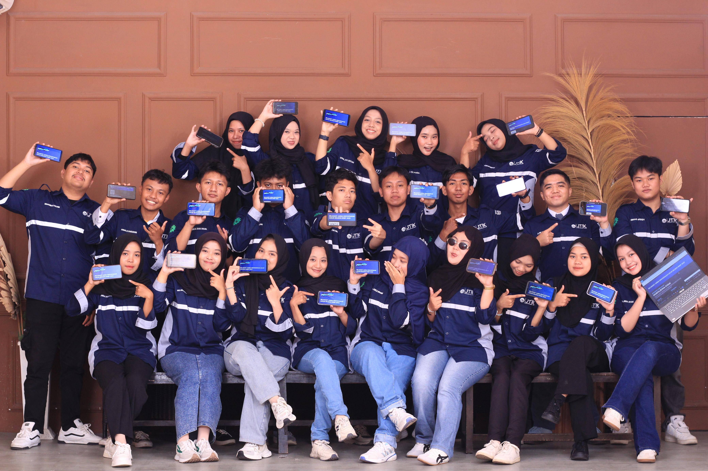
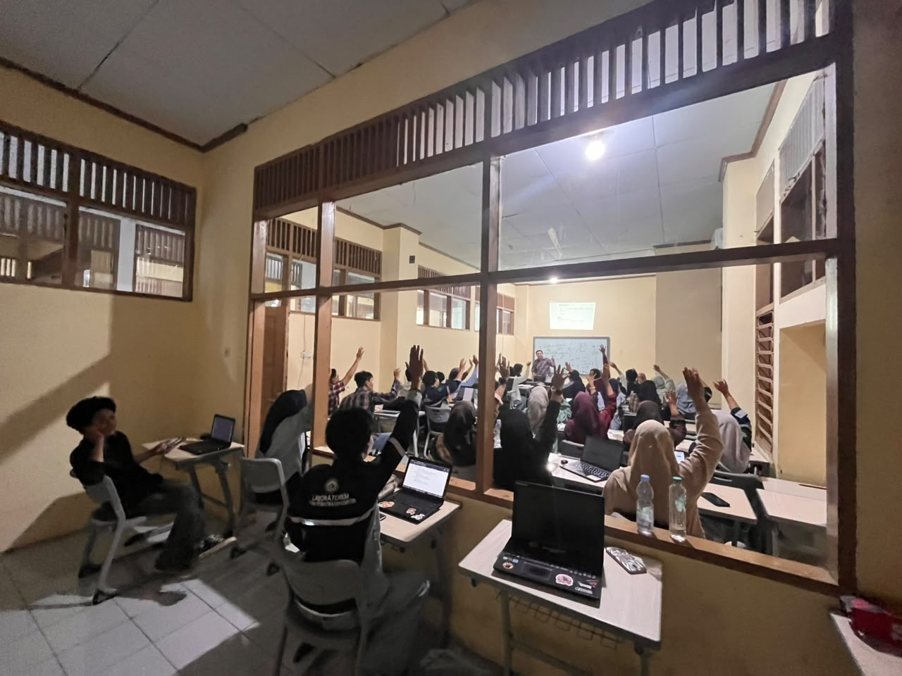
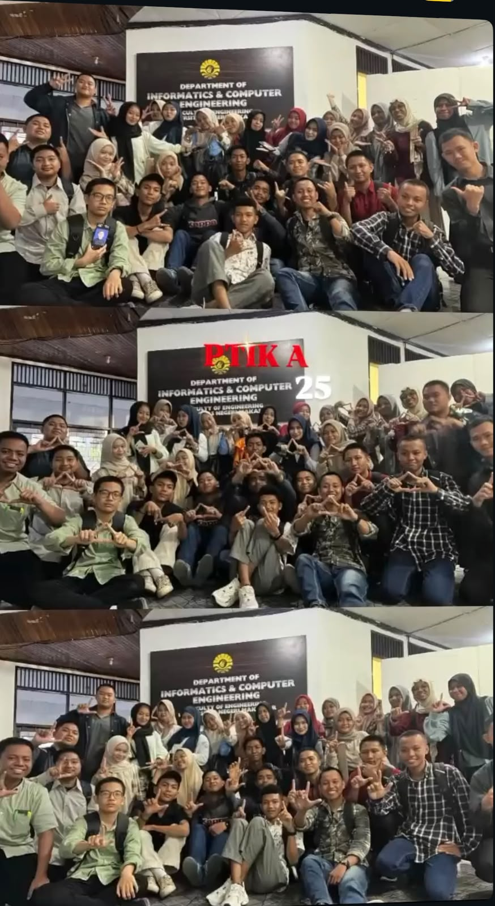

Senin
Jam I–III
3 SKS
Jaringan Komputer
1. Dr. Ir. Muliadi, S.Pd., M.T.
2. Dr. Haekal Febriansyah Ramadhan, S.T., M.T., M.Pd.
Akses jadwal perkuliahan lengkap dengan kode mata kuliah, ruang lab, dosen pengampu, serta dokumentasi kegiatan kelas dalam satu halaman.
Ketuk nama hari untuk menyaring jadwal kuliah secara cepat.
1. Dr. Ir. Muliadi, S.Pd., M.T.
2. Dr. Haekal Febriansyah Ramadhan, S.T., M.T., M.Pd.
1. Ir. Wahyu Hidayat M, S.Pd., M.Pd.
2. Aulyah Zakilah Ifani, M.Kom.
1. Alifya NFH, S.Pd., M.Pd.
2. Muh. Akbar, S.Pd., M.Pd.
1. Ninik Rahayu Ashadi, S.Pd., M.Pd.
2. Nurmayanti, S.Pd., M.Pd.
1. Dyah Darma Andayani, S.T., M.Tel.Eng.
2. Mudarris, S.Pd., M.Eng.
1. Dwi Rezky Anandari Sulaiman, S.Psi., M.Si.
2. Ainun Nida Rifqi, S.Psi., M.Psi.T.
1. Prof. Dr. H. Syahrul, M.Pd.
2. Shabrina Syntha Dewi, S.Pd., M.Pd.
1. M. Syahid Nur Wahid, M.Pd.
2. Muhammad Fadhil Supriadi, S.Pd., M.Pd.
Ketuk foto untuk melihat tampilan penuh dokumentasi kegiatan.


